![]()
8/25/23 - This is my first journal entry!
Its been almost two weeks since we started school and the engineering class has been one of the most fun in school so far. We made our websites (the one you are on now) and have learned to make it. We have watched videos on safety and engineering. We also did a challenge day yesterday where we had to get a marble in bucket using people and pipes where you had to move yourselve to get the marble in a pale in the end.
My Favorite Recipie
9/1/23 - This is my second journal entry
An engineering disipline that I learned this week was that you should always follow the safety rules and always wear protective gear such as glasses, gloves, aprons, and more.
This week we did a challege where we had to pick a home applience and replicate it in tinker cad and Isaac would judge our creations. I made my project as a gaming pc, specifically the image from the h5 elite gaming pc case photo. We also started a mechanical engineering project on a goldberg invention where we pop a balloon at the end by using three simple engineering machines.
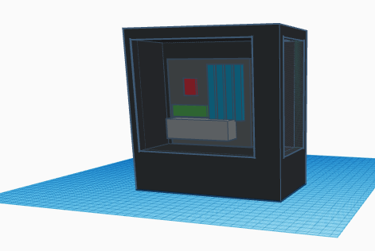
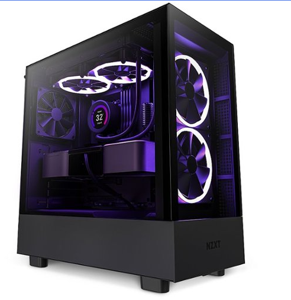
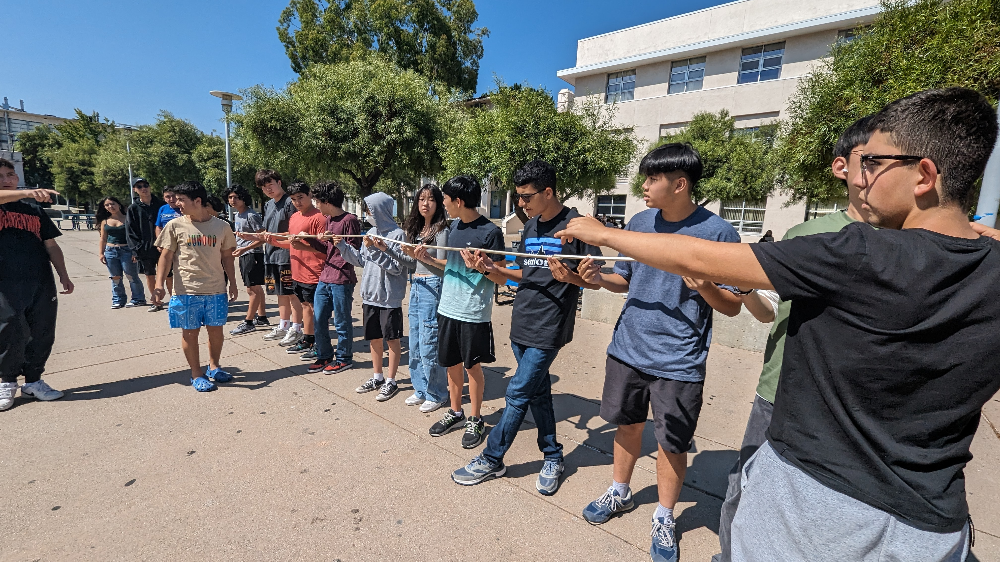
9/8/23 - This is my third journal entry
This week was pretty good, we had no school on monday for labor day, and we had a minimum day today (friday). I went to the beach over the weekend and had some great pasta.
This week we learned about cad and how to use it. We also took an engineering quiz today and had an hour for each class. We learned what kind of engineering is incorperated into cad and how to use it to model real life projects.
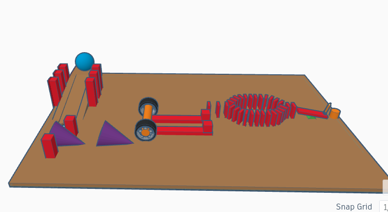
In our goldberg machine we added a total of 4 simple machines including incline/decline plane, wheel and axle, wedge, and a lever. The ramp is used to accelerate the baseball which hits the two cones which then hits the wheel and hits the domino which hits two splitting it into two lines then they meet up to push the lever down, moving the needle up then popping th ebaloon.
The most challenging part of the assignment will most likely be getting everything to work consistenly as well as making the right things in the right scale.
9/22 - This is my fourth journal entry
Last week we were not able to put in a journal entry so we are adding it today. Last week we made our goldberg machines in real life using a combination of cardboard and tape as well as some other materials. After our machine failed many times we changed the design to be more simple and linear so that it would actually work. We could have made it better by adding more machines in a simple way but overall it was straightforward and machine worked. My team worked very hard on it, I was absent for 3 days and they made half of it. I made around the other half which included the ramp, hammer made from dominos, and the lever.
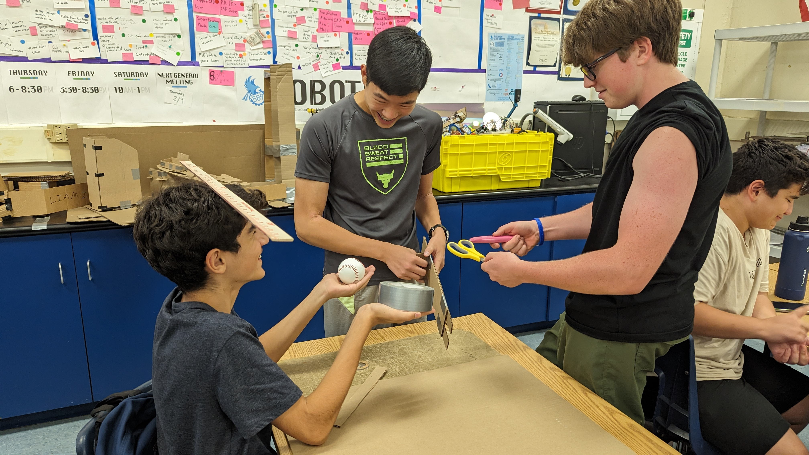
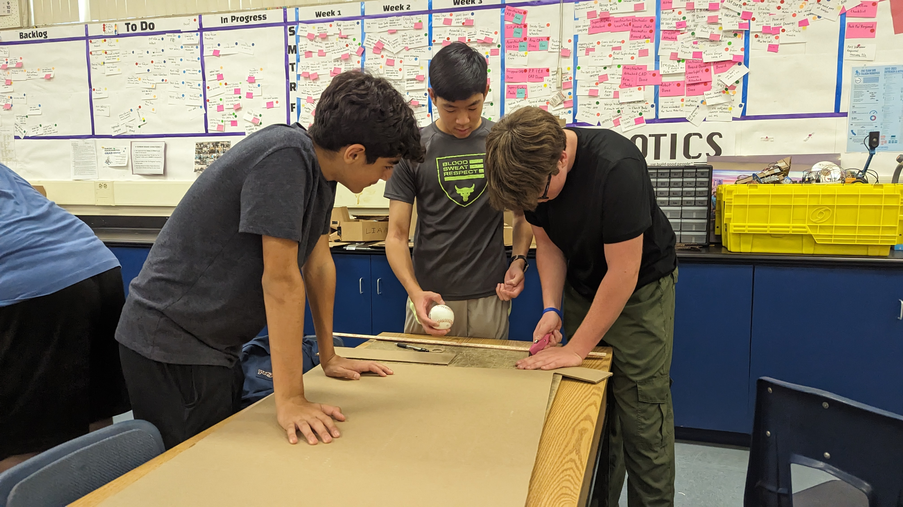
This week we did a few challenges as we did not the week before. One challenge was making a boat that could hold the most weight. We a few folds so that it was a rectangle with walls with a lot of surface area which we theorized would float. When we tested it, it sank, immediately. The other challenge was making an E out of paper accurately with assigned dimensions. My E was almost 100% accurate. With the challanges we learned that a high surface area helps a boat fload and we also learned about how to accurately replicate dimensions. We also learned about computer engineering which we learned was a combination of electrical engineering and computer science. We learned about the application and use of computer engineering and how it can relate to many areas.
9/28/23 - This is my fifth journal entry
This week in engineering we learned about the different compontents of a computer. We learned what componenets do what and what they are used for. The part of computers that interests me is how small the components are but how much more powerful they are than past computers in the late 1900s. This week we took appart a computer and a laptop. We separated the heat sink, the disk drive, and cpu from the motherboard. We learned how the cpu has transistors to carry out calculations and that memory is used along with the cpu to run most programs. This weekend I am planning to go to sixflags with my cousin and on sunday I am planning to go to Daniel's birthday. I am excited to spend my weekend in a fun way.
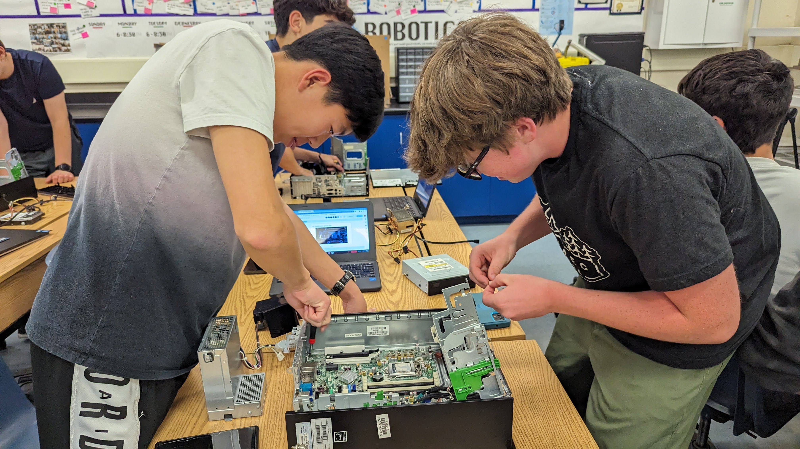
10/6/23 - This is my sixth journal entry
This week in engineering we learned about bioengineering. We learned how bioengineering covers many fields of science, math, and engineering. As our project this week we made a prosthetic hand. My partner was Eron and we made a lego hand. It had two thick fingers and was activated when you stretched the string that was wrapped around the back of your neck. If I were to do something differently with it I would most likely color it yellow and put the handle sideways so that it would be the same direction as a normal hand. This weekend is homecoming but I'm not going to go. Most of my friends aren't going anyways and I will likely be enjoying myself at home. On saturday I am going to volunteer and on sunday I am going to paintball with my friends.
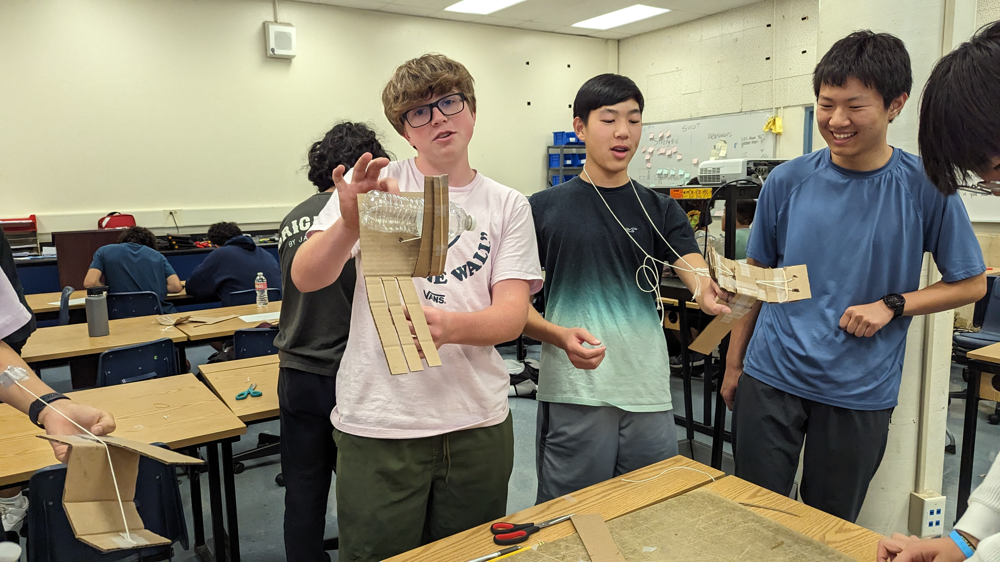
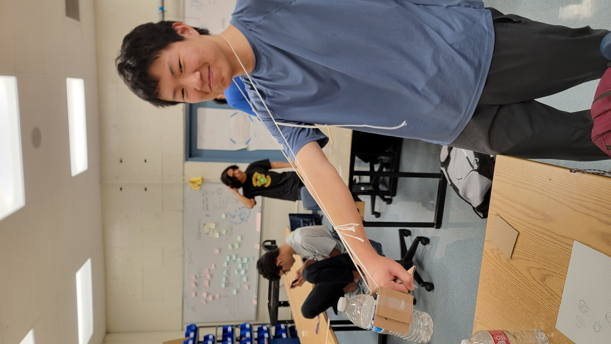
10/13/23 - This is my seventh journal entry
This week we learned about aerospace engineering. We learned about how airplanes fly and different aspects of aerospace engineering. The four forces on a flying object are weight, lift, thrust, and drag. We started our project on building a rocket with 2 liter plastic bottles. My partner is William Sohl and we named our rocket X-AE-12 and modeled it after the space x rocket. We made a tinker cad of our design as well as a BOM. One thing that I like about this class is the way that we have hands on projects allowing us to experience how it might be to go into a certain engineering field. The link of BOM:
BOM Link
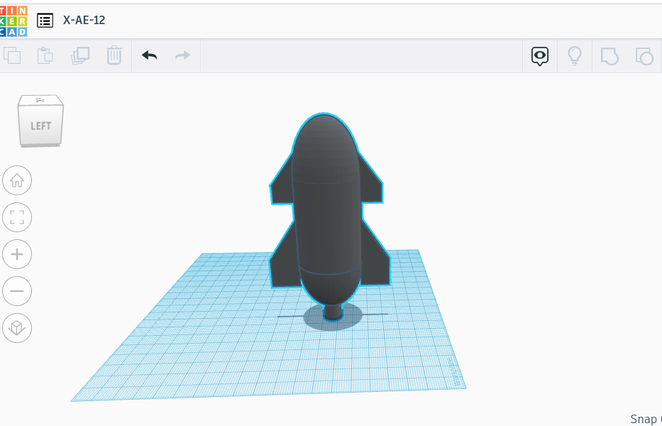
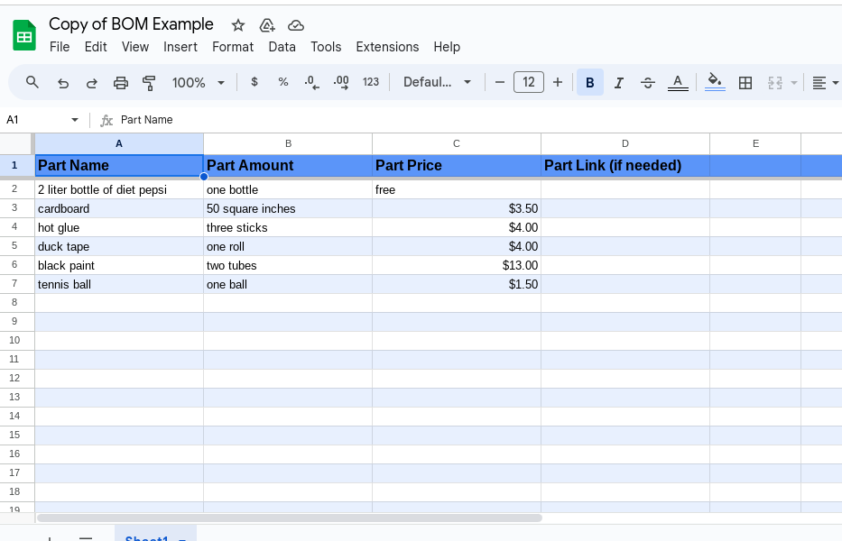
10/20/23 - This is my eighth journal entry
This week we learned about aerospace engineering. We worked on our bottle rockets and tested them. I was teamed up with william and we decided to add wheels to our rocket to make ours roll and got he farthest. We moddeled our rockets after the space x falcon rocket and we added supports and wheels to each wing creating a car like creation. Once we tested ours we put about a quarter cup of water in the bottle and set it to 80 psi. Once launched the rocket sprayed out forward then sideways then forward as it faceplanted into the ground. It went as expected with such a high psi but it was fun to see none the less.
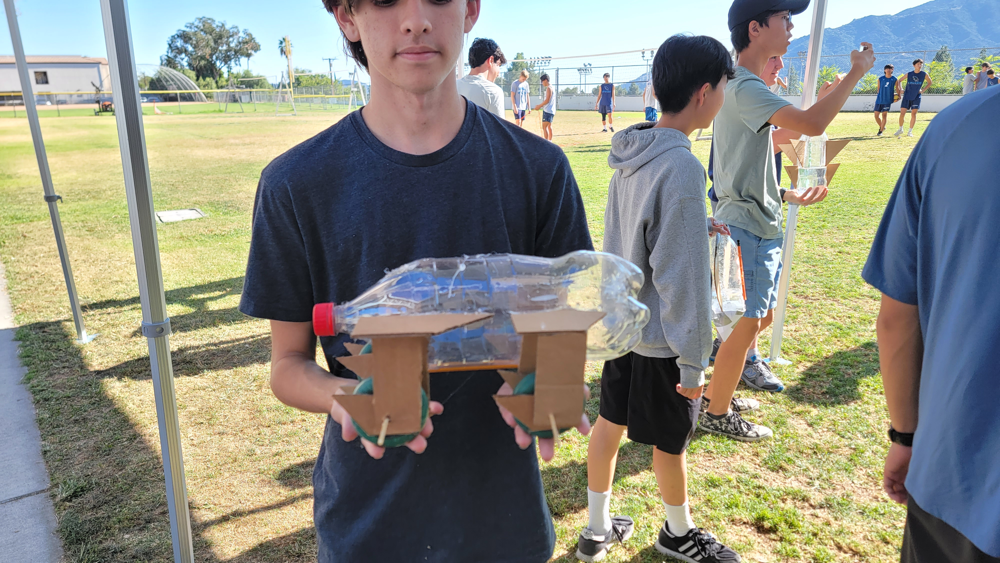
10/26/23 - This is my ninth journal entry
This week we learned about we learned about environmental engineering. We learned about the different things environmental engineers do such as solve issues that harm the environment and people such as water waste, toxic waste, and other problems. We made a water filter our of cotton balls, rocks of different sizes and a plastic bottle. For my water filter I placed the cotton balls in first (bottom) then fine dirt, then small rocks, then medium rocks, then big rocks followed with medium rocks (top) so tha tall the dirt would be filtered out first then only the water would be able to flow down. For the most part it worked but it was not able to filter the yellow color of the muddy water. This weekend is a three day weekend and I am planning to go to sixflags with a few of my friends.
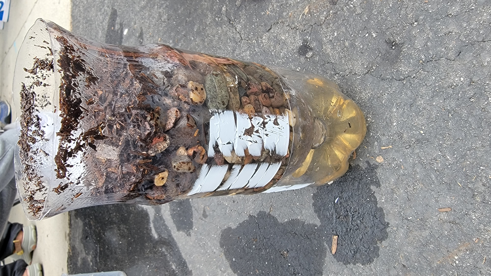
11/3/23 - This is my tenth journal entry
This week we learned about electrical engineering. Three fun facts include the fact that electrial engineering is very physical in the fact that you connect circuits instead of online. Electrical engineers also earn decnent money, around 80k-160k per year. Electrical engineers help maintain and allow for people to access electricity as well as the internet.
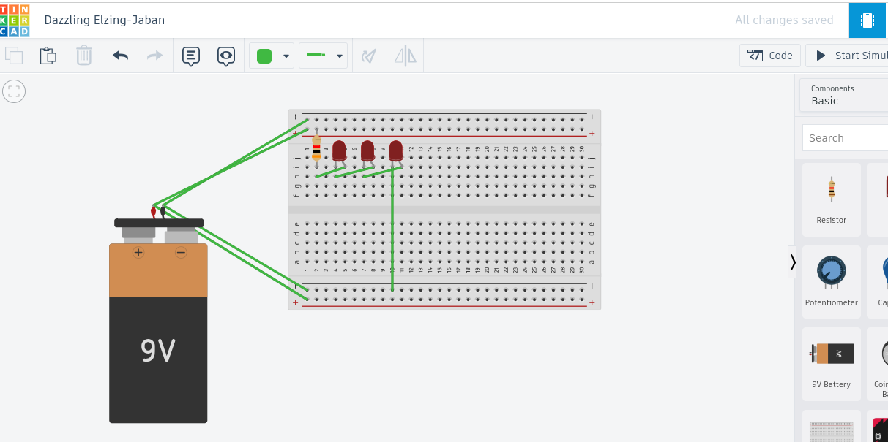
11/9/23 - This is my eleventh journal entry
We learned about electrical engineering for the past two weeks. We used a breadboard to connect leds, resistors, and wires powered by a battery. It was interesting how the breadboard transfered power without wires on the same column.
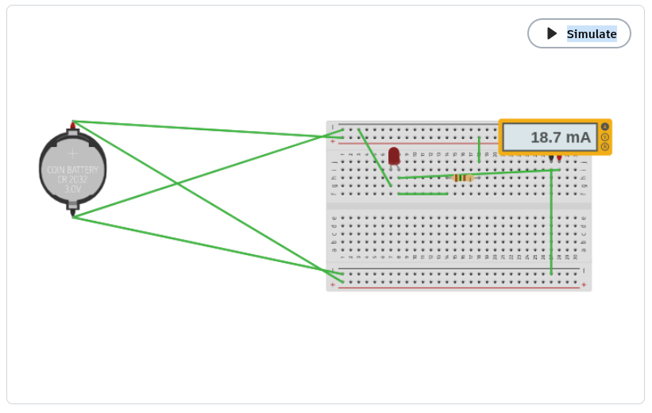
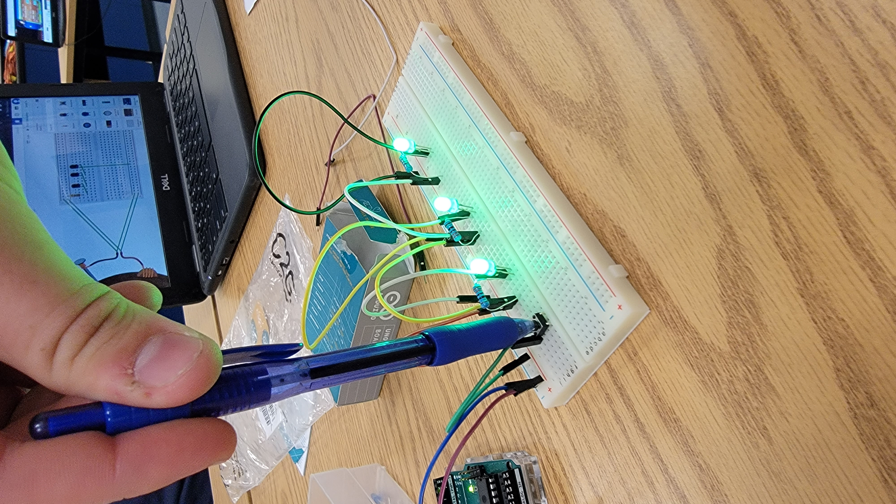
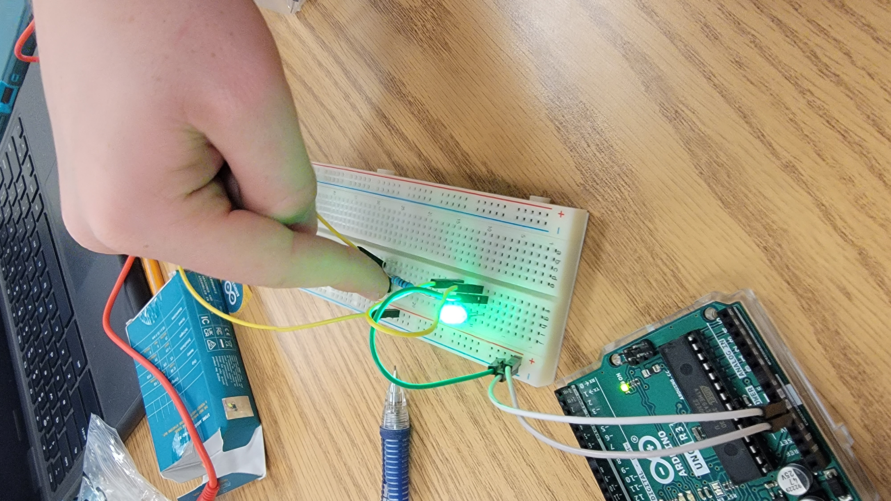
1/10/24 - This is my tweth journal entry
It has been a while since my last upload as the school got hacked and we were unable to do any work or anything on our computers as the wifi was down. We were not able to access portal or do anything online. While that was going on we dived into the engineering project of business engineering. My group came up with the product of canned Co2 for the use of growing plants. We made different size bottles and the smallest one was the most expensive so that we drive more sales for the larger bottles increasing our profit margins. We assumed our company evaluation was at $260,000,000,000. We made our slides and presentation as funny as we could to make a good laugh and we did get the reaction we were hoping for whie we presented.
Google Slide Presentation Link
1/10/24 - This is my thirteenth journal entry